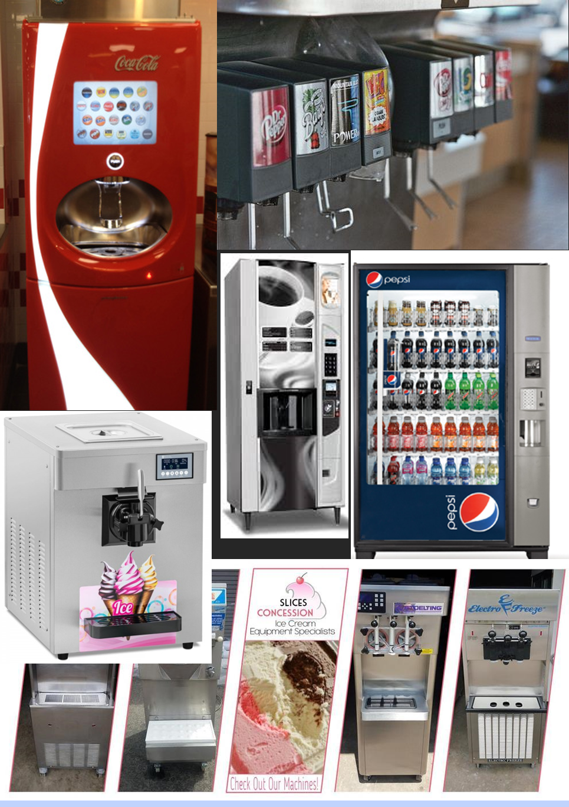
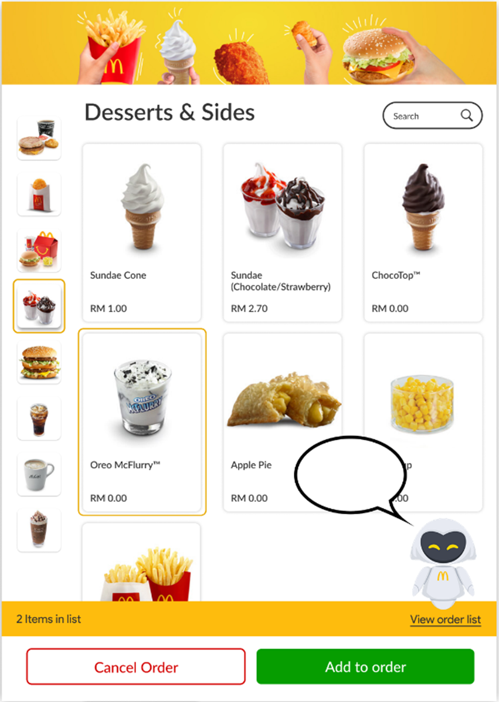

Proftaak
McShower ▼
Doelgroep
Ten eerste hebben we vastgesteld wat onze doelgroep is voor het komende product dat we gaan ontwikkelen. Dit zijn jongeren tussen de 13 en 18 jaar. Dit omdat zij op de middelbare school zitten en steeds meer met vrienden gaan doen dan bij hun ouders rondhangen. Zij beginnen ook steeds meer zelf producten aan te schaffen. Denk aan kleding, gadgets en eten. Zij zijn ook een groep die vaak naar een fastfoodrestaurant gaan met in het specifiek de McDonald’s. Dit is tevens de groep die tegenwoordig enorm vaak op hun telefoon zit. Zij het om socialmedia of voor het spelen van casual games.
Daarnaast vind deze leeftijdsgroep het belangrijk erkent te worden voor iets. Zij willen status. Dit beeld wordt flink versterkt door het werk van influencers. Om de aandacht van deze groep te trekken is er dus iets nodig waarmee zij hun prestatie kunnen delen en zo kunnen vergelijken of de een beter is dan de ander.
Inspiratie/Onderzoek
Vending machines
Om de McFlurry Shower te maken heb ik eerst onderzoek gedaan naar verschillende vending machines. Daaruit zijn de onderstaande gekomen.
Hieruit is gebleken dat de meeste moderne vending machines een schermpje met instructies hebben. En dat ze allemaal een dispenser hebben waar je een beker of iets dergelijks onder moet houden. Op aanraden van verschillende personen is er een bekerhouder gezet in het laatste prototype.
Design/iteraties
Digitale prototypes
Voor het schermpje wat op de vendeing machine moet komen heb ik het service punt van de McDonalds als voorbeeld gepakt.
Echter is dit scherm te groot gebleken voor ons prototype
Ook heb ik de assistent nog een keer los
fysieke prototypes
Voor het maken van de McFlurry shower hebben we 3 prototypes gemaakt. Hieronder zie je ze.

Op basis van dit prototype zijn er interviews gehouden met studenten om feedback te krijgen op het prototype. Zo werd er een levendige ervaring gemist. Dus waar nu “Bleeb” staat zou echt een soort scanner op gezet moeten worden zodat je merkt dat dat om een barcode te scannen is. Daarnaast zie je hier wat het idee en waar dus de toppings vandaan komen. Dit moest ook weg gewerkt worden. Daarnaast was het idee dat het vallen van de toppings van alle kanten zichtbaar zou zijn. Dit omdat de machine in het midden van een McDonald’s moet gaan staan. Na de feedback te hebben besproken en verwerkt is er een tweede prototype uit gekomen.

In deze afbeelding zie je dat je er nu doorheen kunt kijken. Links onder het open gedeelte zie je nu een soort afdakje. Dit is de scanner, daarnaast aan de rechterkant zie je een knop zitten. Deze bevestigd wat je hebt gescant en laat de toppings vallen.
Ten slotte is er een laatste prototype gemaakt. Dit omdat het vorige nog steeds een paperprototype is.

Bij bovenstaand prototype is te zien dat de knop en de scanner verder ontwikkelt zijn en dat het open gedeelte verbeterd is. Daarnaast is nu het schermpje bovenin toegevoegd die de stappen moet vertellen die je moet doorlopen. Als laatste hebben we feedback gehad dat als je je beker zelf vast moet houden het voor kan komen dat je niet alle toppings kan op vangen. Hier werd als feedback gegeven een bekerhouder te maken zodat de beker altijd op dezelfde plek staat. Te zien in bovenstaande afbeelding.